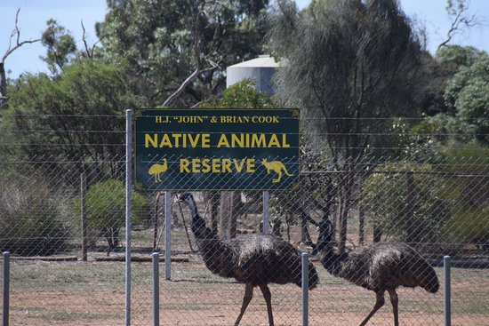

+

Anizoo is a charity founded by C.E.O 'Dubem William Bardi' which help endangered animals to thrive The world. At the year of 2000 this world was full of animals with no chance of being extinct and now over 50 species have gone extinct since then. That's why we made it our responsibility to help these animals and be kept safe we have a goal to rebuild major ecosystems:
Yes Anizoo is not only a charity that helps animals to find safety but we also help to rebuild ecosystems
if you wan to sponsor an animal click on the
link below it will help Anizoo and the animals
also since your helpingthe animals find safety
and your helping us achieve our goal by the
reduction of the number of endangered animals
The black rhino is a very important animal to Anizoo since there are only around 100 of them in the wild Our aim is to stop this animal from becoming extinct and make them used as common as the white rhino (Which is quite a thriving species)
the emperor scorpion used to be a very prominent species of scorpion and use to populate many countries on earth. The emperor scorpion is not this successful any since the scorpion's population has dwindled by up to 90%. Here at Anizoo, we have made it our mission to stop this species from becoming extinct.

We have created multiple wildlife reserves to keep the animals
from becoming extinct we
build our reserves in all seven continents